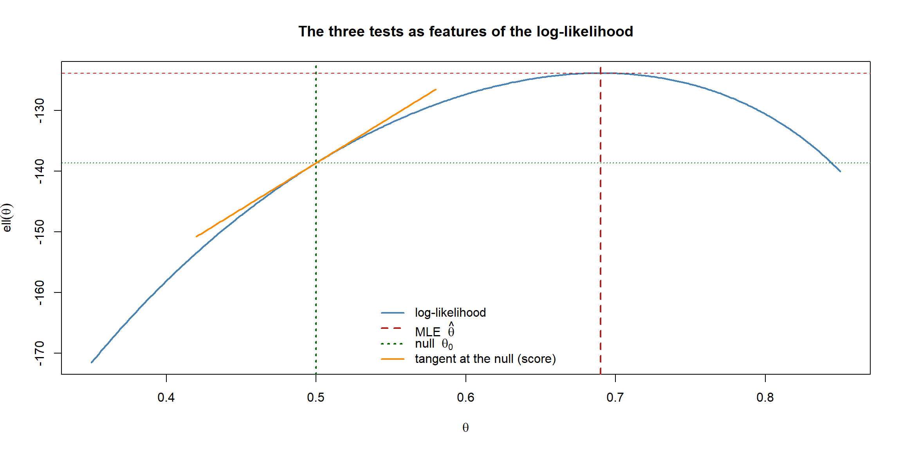
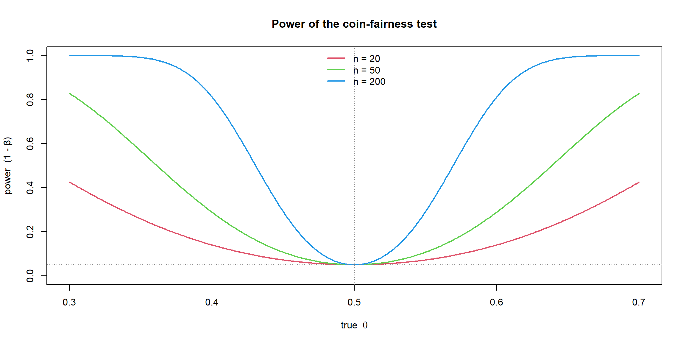

flowchart LR D["Data"] --> E["Estimation<br/>'What is θ?'<br/>→ θ̂ and a CI"] D --> H["Testing<br/>'Is θ = θ₀ plausible?'<br/>→ a p-value and a decision"] E -. "two sides of one coin<br/>(duality)" .-> H
Hypothesis Testing
So far this section has been about estimation: the likelihood gave us a point estimate \(\hat\theta\), and asymptotics and simulation gave us its uncertainty as a confidence interval. Hypothesis testing is the other side of the same coin. Instead of asking “what is \(\theta\)?” it asks a sharper question: “is the data compatible with one specific claim about \(\theta\)?”
Remarkably, this needs no new machinery. The score \(U(\theta)\), the Fisher information \(I(\theta)\), asymptotic normality and Wilks’ theorem — every tool is already on the table from the likelihood and asymptotics pages. A test is just those tools pointed in a new direction.
The logic of a hypothesis test
A hypothesis test pits two rival claims against each other.
- The null hypothesis \(H_0\) is the specific, “boring” claim we put on trial — usually that a parameter equals some fixed value, \(\theta = \theta_0\) (e.g. “the coin is fair, \(\theta = 0.5\)”). It is the status quo we will only abandon with evidence.
- The alternative hypothesis \(H_1\) is everything else we would accept instead (e.g. \(\theta \neq 0.5\)).
The test works like a courtroom that presumes the null is true and asks whether the data is too surprising for that presumption to survive.
flowchart TD
A["Assume H₀ is true"] --> B["Compute a test statistic<br/>measuring how far the data<br/>strays from H₀"]
B --> C["How likely is a value this extreme<br/>IF H₀ were true? → the p-value"]
C --> D{"p-value < α?"}
D -->|"Yes"| E["Reject H₀<br/>(the data is too surprising)"]
D -->|"No"| F["Do not reject H₀<br/>(data is compatible with it)"]
The four moving parts:
- Test statistic — a single number summarising how far the observed data departs from what \(H_0\) predicts. Large values count against \(H_0\).
- Null distribution — the distribution of that statistic if \(H_0\) were true. For the tests below it is (asymptotically) a chi-squared or a standard normal.
- p-value — the probability, computed under \(H_0\), of seeing a statistic at least as extreme as the one we observed. A small p-value means “this data would be very unusual if \(H_0\) were true,” which is evidence against \(H_0\).
- Significance level \(\alpha\) — the threshold (commonly \(0.05\)) we fix in advance. Reject \(H_0\) when \(p < \alpha\).
ImportantWhat a p-value is — and is not
The p-value is \(P(\text{data this extreme} \mid H_0)\). It is not the probability that \(H_0\) is true — that would be a statement about \(\theta\), which a frequentist refuses to make, since \(\theta\) is fixed, not random. “\(p = 0.03\)” means “if the null held, data like this would arise only 3% of the time,” not “there is a 3% chance the null is true.”
NoteOne-sided vs two-sided alternatives
The alternative above, \(H_1: \theta \neq \theta_0\), is two-sided — it counts a departure in either direction as evidence against the null. Sometimes only one direction is of interest (e.g. “is the new treatment better?”, \(H_1: \theta > \theta_0\)), giving a one-sided test that puts the whole rejection region in one tail and is more powerful when the truth really does lie that way. The signed Wald statistic \(Z_{\text{W}}\) below carries this direction, so one-sided tests come straight from it. The squared trinity statistics we focus on, however, are inherently two-sided — squaring throws the sign away. Choose the direction before seeing the data: picking a one-sided test after peeking is a classic way to manufacture significance.
Two ways to be wrong: errors and power
Because the data is random, any decision rule sometimes errs. There are exactly two ways:
| \(H_0\) is really true | \(H_0\) is really false | |
|---|---|---|
| We reject \(H_0\) | Type I error (false positive), prob. \(\alpha\) | Correct decision |
| We do not reject \(H_0\) | Correct decision | Type II error (false negative), prob. \(\beta\) |
- The significance level \(\alpha\) is the Type I error rate — the chance of crying wolf when the null is true. We control it directly by choosing the cut-off.
- The power of a test is \(1 - \beta\): the probability of correctly rejecting a false null. Power rises with the sample size, the effect size (how far the truth is from \(\theta_0\)), and the significance level.
NoteThe asymmetry of testing
A test never “accepts” \(H_0\) — it only fails to reject it. Absence of evidence is not evidence of absence: a non-significant result may mean the null is true, or merely that we had too little data (low power) to detect a real effect. This is why we say “do not reject,” not “accept.”
Warningα is per-test: beware multiple comparisons
The 5% Type I error rate applies to one test. Run many tests and the false positives accumulate: testing 20 true nulls at \(\alpha = 0.05\) gives roughly a \(1 - 0.95^{20} \approx 64\%\) chance of at least one spurious “discovery.” Hunting through a dataset for any significant result — p-hacking — exploits exactly this. When you perform many tests, adjust for it (e.g. the Bonferroni correction uses \(\alpha/m\) for \(m\) tests), and treat a lone significant result among many with suspicion.
A health warning: p-hacking and bad practice
The machinery on this page is only trustworthy if the test is decided before the data is examined. The Type I error guarantee — “at most a 5% chance of a false positive” — silently assumes you run one pre-specified test on the data. Almost every way of bending that assumption inflates the real false-positive rate far above the advertised \(\alpha\), usually without the analyst noticing. Collectively these are p-hacking (or “questionable research practices”), and they are the single biggest reason published findings fail to replicate.
The usual culprits:
- Fishing for significance. Trying many variables, subgroups, or transformations and reporting only the combination that crossed \(p < 0.05\) — the multiple-comparisons trap above, dressed up as a single result.
- Optional stopping. Peeking at the data and stopping collection the moment \(p < 0.05\). If you keep testing as data trickles in, you are guaranteed to eventually cross the threshold by chance, even under a true null.
- HARKing (Hypothesising After the Results are Known). Running the test, seeing what came out, and then presenting that as the hypothesis you meant to test all along — turning an exploratory accident into a fake confirmation.
- Selective reporting / dropping data. Quietly excluding “inconvenient” observations, or burying the analyses that didn’t work, until the survivors look significant.
TipGoing further 🚀
The antidotes are mostly about discipline, not statistics: pre-register your hypothesis and analysis plan before collecting data; report every test you ran, not just the significant ones; treat anything found by exploration as a hypothesis to confirm on fresh data, never as a result; and remember that a p-value is only interpretable for a test you committed to in advance. A good rule of thumb: if you would not have run exactly this test had the data looked different, the p-value no longer means what it claims.
The trinity: Wald, score and likelihood-ratio tests
For parametric models there are three classical large-sample tests, sometimes called the holy trinity. All three test the same \(H_0: \theta = \theta_0\), and all three are asymptotically \(\chi^2_1\) under the null — but they measure the discrepancy between \(\hat\theta\) and \(\theta_0\) in three geometrically different ways on the log-likelihood curve.
flowchart TD H0["H₀: θ = θ₀"] H0 --> W["<b>Wald</b><br/>How far is θ̂ from θ₀?<br/>(horizontal distance,<br/>scaled by curvature at θ̂)"] H0 --> S["<b>Score</b><br/>How steep is ℓ at θ₀?<br/>(slope at the null,<br/>scaled by info at θ₀)"] H0 --> L["<b>Likelihood-ratio</b><br/>How much higher is ℓ(θ̂)<br/>than ℓ(θ₀)?<br/>(vertical drop)"] W --> C["All three → χ²₁ under H₀"] S --> C L --> C
The Wald test
Start at the peak and measure how many standard errors the null value sits away from the MLE. Using \(\operatorname{se}(\hat\theta) = 1/\sqrt{I(\hat\theta)}\), \[ \boxed{\,Z_{\text{W}} = \frac{\hat\theta - \theta_0}{\operatorname{se}(\hat\theta)}\,}\qquad\text{or, squared,}\qquad W_{\text{W}} = I(\hat\theta)\,(\hat\theta - \theta_0)^2 \;\overset{\text{approx.}}{\sim}\; \chi^2_1 . \] It only needs the fit at \(\hat\theta\) — the same ingredients as the Wald confidence interval. Cheap, but it assumes the likelihood is symmetric (parabolic) around the peak.
The score test
This one never fits the alternative at all — it stays at \(\theta_0\) and asks how steep the log-likelihood still is there. If \(\theta_0\) were the true peak, the slope (score) would be near zero; a steep slope says we are far from the maximum. Standardising the score by its standard deviation \(\sqrt{I(\theta_0)}\), \[ \boxed{\,W_{\text{S}} = \frac{U(\theta_0)^2}{I(\theta_0)} \;\overset{\text{approx.}}{\sim}\; \chi^2_1\,} \] Its great practical advantage: it only requires the model fitted under \(H_0\), never the unrestricted MLE. When the null model is far easier to fit than the full one, the score test is the natural choice.
The likelihood-ratio test
This is the test we already half-built on the asymptotics page. Compare the height of the log-likelihood at its peak with its height at the null: \[ \boxed{\,W_{\text{LR}} = 2\big[\,\ell(\hat\theta) - \ell(\theta_0)\,\big] \;\overset{\text{approx.}}{\sim}\; \chi^2_1\,} \] By Wilks’ theorem (derived on the asymptotics page) this is \(\chi^2_1\) under \(H_0\). It uses the genuine shape of the likelihood rather than a parabolic approximation, so it is generally the most accurate of the three — at the cost of fitting both the null and the full model.
NoteIn a nutshell: one question, three rulers
Do not let three formulas fool you into thinking there are three different ideas. All three ask the very same thing — “is \(\theta_0\) far from the peak of the log-likelihood?” — they just measure the distance differently: Wald reads it sideways (how far \(\hat\theta\) sits from \(\theta_0\)), the score reads the slope at \(\theta_0\), and the likelihood-ratio reads the drop in height. When the peak is a tidy parabola, all three rulers give the same answer.
NoteA note on notation: I(θ̂)
On the likelihood page we distinguished the observed information \(J(\theta) = -\ell''(\theta)\) from the expected (Fisher) information \(I(\theta) = \mathbb{E}[-\ell''(\theta)]\). In the formulas above \(I(\hat\theta)\) and \(I(\theta_0)\) are the information evaluated at a single point — for the coin model below they coincide because the expectation is available in closed form, but in general practitioners plug in whichever is to hand (often the observed information straight from the fit, e.g. optim’s Hessian). The asymptotics are the same either way.
NoteThree views of the same hill
Picture the log-likelihood as a hill with its summit at \(\hat\theta\). The Wald test measures the horizontal distance from the summit to \(\theta_0\); the likelihood-ratio test measures the vertical drop from the summit down to the height above \(\theta_0\); the score test measures the slope of the hillside at \(\theta_0\). When the hill is a perfect parabola all three agree exactly — they differ only by how skewed the real likelihood is, which is also why they can disagree in small samples.
Confidence intervals and tests are dual
There is a deep equivalence, already hinted at on the asymptotics page:
\[ \theta_0 \text{ lies in the 95\% CI} \iff \text{the test of } H_0:\theta=\theta_0 \text{ is } \textbf{not} \text{ rejected at } \alpha = 0.05 . \]
A confidence interval is exactly the set of null values a test would not reject, and a test is exactly the question of whether a value falls in the interval. This is why the Wald CI (\(\hat\theta \pm 1.96\,\operatorname{se}\)) and the Wald test (\(|Z_{\text{W}}| > 1.96\)) are the same statement, and why inverting the likelihood-ratio statistic on the asymptotics page gave a confidence interval. Estimation and testing are two readings of one picture.
Worked example in R
We reuse the coin-flip model from the likelihood and asymptotics pages, and test whether the coin is fair: \[ H_0: \theta = 0.5 \qquad\text{vs}\qquad H_1: \theta \neq 0.5 . \] Everything is in closed form: \(\hat\theta = k/n\), score \(U(\theta) = \tfrac{k}{\theta} - \tfrac{n-k}{1-\theta}\), information \(I(\theta) = \tfrac{n}{\theta(1-\theta)}\).
Code
```{r}
#| warning: false
#| message: false
set.seed(1)
# Simulate coin flips with a true (but "unknown") bias
trueTheta <- 0.7
n <- 200
flips <- rbinom(n, size = 1, prob = trueTheta)
k <- sum(flips)
theta0 <- 0.5 # the null value: "the coin is fair"
# Building blocks
ll <- function(theta) k * log(theta) + (n - k) * log(1 - theta)
score <- function(theta) k / theta - (n - k) / (1 - theta)
info <- function(theta) n / (theta * (1 - theta))
mle <- k / n
c(k = k, mle = mle)
``` k mle
138.00 0.69 Now compute all three test statistics. Each is compared against a \(\chi^2_1\) distribution, whose upper 5% cut-off is \(\approx 3.84\).
Code
```{r}
# 1. Wald: distance of the MLE from theta0, scaled by info AT THE MLE
wWald <- info(mle) * (mle - theta0)^2
# 2. Score: steepness of the log-likelihood AT theta0, scaled by info AT theta0
wScore <- score(theta0)^2 / info(theta0)
# 3. Likelihood-ratio: vertical drop from the peak to the null
wLR <- 2 * (ll(mle) - ll(theta0))
# Each statistic, with its p-value from the chi-squared(1) null distribution
results <- rbind(
Wald = c(statistic = wWald, pValue = 1 - pchisq(wWald, df = 1)),
Score = c(statistic = wScore, pValue = 1 - pchisq(wScore, df = 1)),
LikelihoodRatio = c(statistic = wLR, pValue = 1 - pchisq(wLR, df = 1))
)
round(results, 4)
``` statistic pValue
Wald 33.7541 0
Score 28.8800 0
LikelihoodRatio 29.6186 0All three statistics sit far above the \(3.84\) cut-off and the p-values are essentially zero, so we decisively reject the null that the coin is fair — unsurprising, since the data was generated with \(\theta = 0.7\). Note how closely the three statistics agree: with \(n = 200\) the likelihood is nearly parabolic, exactly the regime where the trinity coincides.
Seeing the three tests on the log-likelihood
The picture below makes the geometry of the Note above concrete. The likelihood-ratio statistic is the vertical gap between the two dashed horizontal lines; the Wald statistic comes from the horizontal gap \(\hat\theta - \theta_0\); the score statistic comes from the slope of the tangent line drawn at \(\theta_0\).
Code
```{r}
#| fig-align: center
grid <- seq(0.35, 0.85, length.out = 400)
plot(grid, ll(grid), type = "l", lwd = 2, col = "steelblue",
xlab = expression(theta), ylab = expression(ell(theta)),
main = "The three tests as features of the log-likelihood")
# Vertical lines at the MLE and the null
abline(v = mle, col = "firebrick", lwd = 2, lty = 2)
abline(v = theta0, col = "darkgreen", lwd = 2, lty = 3)
# Heights at the peak and at the null: their vertical gap is the LR statistic
abline(h = ll(mle), col = "firebrick", lwd = 1, lty = 2)
abline(h = ll(theta0), col = "darkgreen", lwd = 1, lty = 3)
# Tangent (slope = score) at theta0: a near-vertical slope means strong evidence
slope <- score(theta0)
curve(ll(theta0) + slope * (x - theta0), add = TRUE,
col = "darkorange", lwd = 2, lty = 1, from = 0.42, to = 0.58)
legend("bottom", bty = "n", lwd = 2, lty = c(1, 2, 3, 1),
col = c("steelblue", "firebrick", "darkgreen", "darkorange"),
legend = c("log-likelihood",
expression(paste("MLE ", hat(theta))),
expression(paste("null ", theta[0])),
"tangent at the null (score)"))
```
Cross-check against R’s built-in test
R already knows how to test a proportion. prop.test (a score-type test, with an optional continuity correction) and the exact binom.test should broadly agree with our hand-rolled statistics:
Code
```{r}
prop.test(k, n, p = theta0, correct = FALSE)$p.value # score-type
binom.test(k, n, p = theta0)$p.value # exact
```[1] 7.700393e-08
[1] 8.026906e-08Both return essentially zero, confirming our trinity by an independent route.
Seeing power in action
Earlier we defined power as \(1-\beta\) and claimed it rises with the sample size and the effect size. With the coin model in hand we can stop asserting this and simply draw it. Testing \(H_0: \theta = 0.5\) two-sided at \(\alpha = 0.05\), we reject when the estimate strays more than \(1.96\) null standard errors from \(0.5\). For any true \(\theta\) the estimate \(\hat\theta\) is approximately \(\mathcal N\big(\theta,\, \theta(1-\theta)/n\big)\), so the probability of landing in the rejection region — the power — is a quantity we can compute directly.
Code
```{r}
#| fig-align: center
# Power of the two-sided test of H0: theta = 0.5, at level alpha = 0.05
powerCoin <- function(theta, n, theta0 = 0.5, alpha = 0.05) {
se0 <- sqrt(theta0 * (1 - theta0) / n) # SE under the null
crit <- qnorm(1 - alpha / 2) # 1.96
lower <- theta0 - crit * se0 # rejection boundaries
upper <- theta0 + crit * se0
se <- sqrt(theta * (1 - theta) / n) # SE under the true theta
# P(reject) = P(thetaHat below lower) + P(thetaHat above upper)
pnorm(lower, theta, se) + (1 - pnorm(upper, theta, se))
}
grid <- seq(0.3, 0.7, length.out = 400)
plot(NA, xlim = range(grid), ylim = c(0, 1),
xlab = expression(paste("true ", theta)), ylab = "power (1 - β)",
main = "Power of the coin-fairness test")
for (i in seq_along(c(20, 50, 200))) {
nn <- c(20, 50, 200)[i]
lines(grid, powerCoin(grid, nn), lwd = 2, col = i + 1)
}
abline(h = 0.05, col = "grey50", lty = 3) # at theta = 0.5 power = alpha
abline(v = 0.5, col = "grey50", lty = 3)
legend("top", bty = "n", lwd = 2, col = c(2, 3, 4),
legend = c("n = 20", "n = 50", "n = 200"))
```
Two things the picture makes obvious. At \(\theta = 0.5\) the curve dips to \(\alpha = 0.05\) — when the null is true, “power” is just the Type I error rate, the 5% chance of rejecting anyway. And the curves climb steeply as the truth moves away from \(0.5\) and as \(n\) grows: a bigger sample, or a more biased coin, makes a real departure easier to detect. This is exactly why a non-significant result is not proof of fairness — with \(n = 20\), even a genuinely biased \(\theta = 0.6\) coin is caught less than half the time.
Testing when there is no formula
Just as with confidence intervals, the trinity relies on the asymptotic \(\chi^2_1\) approximation, which can be poor in small samples or for awkward models. When it cannot be trusted, the same simulation ideas from the previous page apply: generate many data sets under the null, recompute the statistic on each, and read the p-value off the simulated null distribution directly — a Monte Carlo or parametric bootstrap test. The principle is identical to the coverage study on the simulation page: when the formula is shaky, simulate the repetitions the formula was only approximating.
TipGoing further 🚀
Planning the sample size. Power is most useful before collecting data — to ask “how big must \(n\) be to detect the effect I care about?” The base power.prop.test does this for two proportions, and the pwr package covers many other designs:
Code
```{r}
power.prop.test(p1 = 0.5, p2 = 0.6, power = 0.8)$n # n per group
```[1] 387.3385Code
```{r}
#| eval: false
library(pwr)
pwr.t.test(d = 0.5, power = 0.8) # n per group for a two-sample t-test
```The trinity on real fitted models. You rarely code the statistics by hand. For a likelihood-ratio test between two nested fits use lmtest::lrtest, and for a Wald test on coefficients use aod::wald.test:
Code
```{r}
#| eval: false
library(lmtest); library(aod)
lrtest(modelNull, modelFull) # likelihood-ratio
wald.test(b = coef(fit), Sigma = vcov(fit), Terms = 2) # Wald
```Summary
| Test | Statistic | Fits needed | Strength |
|---|---|---|---|
| Wald | \(I(\hat\theta)(\hat\theta - \theta_0)^2\) | MLE only | Cheap; assumes a symmetric likelihood |
| Score | \(U(\theta_0)^2 / I(\theta_0)\) | Null model only | No need to fit the alternative |
| Likelihood-ratio | \(2[\ell(\hat\theta) - \ell(\theta_0)]\) | Both models | Most accurate; uses the true likelihood shape |
| Concept | Meaning |
|---|---|
| Null \(H_0\) / alternative \(H_1\) | The claim on trial vs everything else |
| p-value | \(P(\text{data this extreme}\mid H_0)\) — not \(P(H_0\text{ true})\) |
| Significance level \(\alpha\) | Pre-chosen threshold = Type I error rate |
| Power \(1-\beta\) | Probability of rejecting a false null |
| CI–test duality | The CI is the set of null values a test would not reject |
All of this is the likelihood machinery from earlier in the section, simply turned from “what is \(\theta\)?” to “is \(\theta = \theta_0\) believable?” — the two questions every frequentist analysis ends up asking.